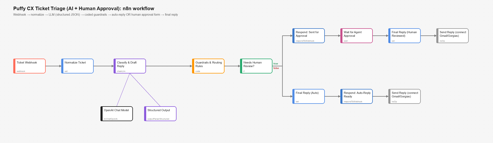

Open to AI engineering roles · remote or relocation
I build production AI systems where the model is the product.
AI/ML engineer with 4+ years shipping LLM systems to real users: a speech-AI service for a US telephony provider, the multi-agent engine that lets a 12B model do 32B-class work, and RAG over 10M+ embeddings, often on-prem and air-gapped.
12B → 32Bclass work from a smaller model, GPU cluster to one node
10M+embeddings in production RAG, 10k+ queries/day
50k+concurrent users on real-time speech services
8Kubernetes environments incl. two GPU/DGX clusters
About
An engineer who ships models into other people's infrastructure and keeps them running.
I'm an AI/ML engineer at Netstratum Technologies in Kochi, where I've spent my whole career so far (since June 2022) on production LLM systems. I build the parts that decide whether an AI product actually works: orchestration, retrieval, speech pipelines, model serving and the Kubernetes delivery underneath them.
Most of what I ship runs on-premise and air-gapped inside enterprise customers' own infrastructure. It goes through their security reviews and is built to HIPAA-style controls (encryption, RBAC, audit logging), so no customer data leaves their environment. That constraint shaped how I work: small models first, strict schemas, failover everywhere, and evals that gate every release.
Outside work I build full products end to end to test ideas quickly. Recent ones are an AI data analyst (DataRat), a WebGPU home-design and costing platform (3xDezine), and an open reference implementation of reliable small-model agents (small-model-agents).
Role
AI/ML Engineer & Full-Stack Developer
Experience
4+ years, all on production AI
Based in
Kochi (Ernakulam), Kerala, India
Open to
Remote · relocation within India · international with sponsorship
Education
B.Tech CSE, KMEA Engineering College (2022)
Languages
English (fluent), Malayalam (native), Hindi, Urdu, Arabic (proficient)
Flagship: Echo
Production speech AI for a US hosted-telephony provider's voicemail and call-recording features.
Speech AI · in production
Two flows, two engines, one reliable service
Voicemail, accuracy-first: NVIDIA Canary, with automatic fallback to Whisper when output is degenerate, and a final failover to the shared vLLM tier.
Call recordings, throughput-first: Whisper served on vLLM behind a load balancer, Redis priority queues (0–99) with live re-prioritisation, and Celery workers on stateless HA nodes.
Long audio: 45-minute chunks up to 10 hours, with timestamps kept absolute across chunks; automatic language ID.
Speaker diarization: Silero VAD per channel for stereo; ECAPA-TDNN embeddings with agglomerative clustering for mono.
LLM analytics that never block transcription: Gemma summaries and keywords on a separate queue and load balancer, delivered by webhook or polling.
Echo architecture (host and customer names omitted)
Production work
Systems I built at Netstratum for the BlueMesh enterprise AI platform and its customers.
Agents
bm-agent-engine: multi-agent tool calling
Replaced CrewAI · 12B model doing 32B-class work · GPU cluster → single node
I wrote the proprietary engine that now serves all agent traffic on BlueMesh, as a drop-in replacement for the CrewAI-based orchestration. I was the largest contributor to its ~49k lines.
73 toolsets behind a registry and manifest system (GitLab, SharePoint / MS Graph, AWS, Azure, BigQuery, Jira, Snowflake, Kafka, Playwright and more), degrading gracefully when a driver is missing.
ReAct with tiered escalation, structured delegate / ask / finish steps, and a FAST / SMALL / LARGE / THINKING router over vLLM, Ollama or any OpenAI-compatible endpoint.
Kept the live SSE event contract exactly, so the UI cut over with a single config change. Redis-backed concurrency leases handle admission control.
An on-premise enterprise chat platform where no customer data leaves the customer's infrastructure. I designed its retrieval pipeline end to end.
Layout-aware ingestion with Docling plus RapidOCR, structure-aware chunking, Sentence-Transformers embeddings and a Cassandra vector schema tuned for similarity search.
Hybrid keyword + semantic retrieval with re-ranking: +45% answer accuracy over the bare LLM baseline.
FAISS semantic search cut retrieval time by 70%. Quantization, batching and caching brought average inference down to 1.8 s.
An LLM response-quality evaluation framework gates every release.
I built the speech stack (Whisper STT, Tacotron2 TTS) and shipped live captioning into a production video-calling product. The real-time side is WebSocket and REST services (FastAPI, Node.js) with event-driven inference workers on RabbitMQ and Kafka.
I also shipped on-device background blur with MediaPipe Tasks and a quantized TFLite face detector, keeping mobile inference under 30 ms.
Vision-language models in production · pluggable OCR into RAG
I own a FastAPI service that serves PaddleOCR-VL and Qwen-VL through Transformers, with CUDA device handling and attention-implementation tuning for throughput. It also has image analysis, generation, editing and avatar endpoints.
EasyOCR, RapidOCR and PP-OCRv4 ONNX sit behind one interface. Per-document figure understanding turns charts and diagrams into retrievable text. I also fine-tuned LayoutLMv3 for invoice and contract extraction, reaching 91% F1 on 100K+ documents a month.
I'm the leading contributor to a Kustomize-layered manifest tree (config → data → apps → edge) covering the RAG service, agent engine, workflow orchestrator and search, with cert-manager TLS and edge routing. Services also run on GCP Cloud Run with autoscaling, and GitLab CI handles model testing and release.
I designed DebugTrail, ML-assisted log analysis using Isolation Forest and LSTM anomaly detection over Grafana LogQL. It cut time to detection by 60% and false positives by 70%. I also built a streaming moderation pipeline (distilled BERT, 50 ms over Kafka) that cut inappropriate content by 85%.
KubernetesKustomizeGPU / DGXGitLab CIPrometheusGrafanaCloud Run
Enterprise delivery
Customer products and regulated deployments
OfficeSuite Live for Windstream · NCS: 50,000+ downloads
I built OfficeSuite Live, a video-conferencing product, for Windstream Enterprise as a named external client. I also shipped NCS, an enterprise VCaaS platform with 50,000+ downloads across both app stores.
I took the AI platform through customers' security reviews: encryption at rest and in transit, RBAC, audit logging, HIPAA frameworks, and multi-tenant rollouts with tenant-aware routing.
React NativeReactSIP / VoIPRBACHIPAA
Arabic AI
Arabic LLM fine-tuning
LoRA / QLoRA · Arabic-aware retrieval
I fine-tuned open models for Arabic with Unsloth and PEFT, and built Arabic-aware retrieval (normalisation and hybrid search). I also fine-tuned BERT, T5 and GPT-family models for classification, NER and generation. I read and understand Arabic well, which helps when checking model output for Gulf products.
UnslothLoRAQLoRAPEFTHugging Face
Automation
AI ticket triage with human approval (n8n)
LLM drafts · coded guardrails decide · a human approves risky cases
A webhook takes a customer ticket, and an LLM classifies it and drafts a reply as structured JSON. Deterministic rules send refunds, warranty claims, low-confidence and high-value cases to an Approve / Edit / Reject form. I tested it on 8 scenarios, including Arabic and a prompt-injection attempt.

n8nOpenAIStructured outputsHuman-in-the-loop
Independent projects
Products I designed and built end to end, all public on GitHub, two with live demos.
AI analytics · live demo
DataRat: ask your data anything
Connect a data source and get KPIs, anomalies and forecasts immediately. Ask a question in plain English and a Planner → SQL Engineer → Analyst → Narrator agent pipeline answers with SQL, a chart and an executive summary. The SQL step retries with the error fed back.
The LLM is optional: Gemini or Claude output is checked against a schema, and a deterministic rules engine takes over when there's no key or the model fails. A read-only SQL guard, DuckDB file-access lockdown and private-network blocking keep it safe.
Executive overview: KPIs, anomalies and Holt-Winters forecasts
WebGPU · full stack · Android
3xDezine: design a home, see it in 3D, know what it costs
Draw a 2D floor plan, walk through it in photorealistic WebGPU 3D (three.js r186 with SSGI, SSR, GTAO and TRAA), apply real materials, and get a live INR cost plus a GST-ready quotation.
Shared pure engines run on every edit and again on the server: surface costing with wastage and pack rounding, plan rules against the National Building Code 2016, and integer-paise quotations with GST by place of supply. The project includes a Fastify + Drizzle API with OpenAPI 3.1, Supabase with row-level security and 24 edge functions, Razorpay billing with idempotent HMAC-verified webhooks, and a native Kotlin / Compose client.
Studio: plan editor, WebGPU 3D view and live estimate
Open source · agents · evals
small-model-agents
A dependency-free Python reference implementation of the ideas behind my production orchestrator: give the model less to decide. Every call is a narrow, schema-validated decision, and a violation is quoted back and retried. Requests route across FAST / SMALL / LARGE / THINKING tiers and escalate only on measurable evidence.
It works with any OpenAI-compatible server (vLLM, Ollama, llama.cpp) and ships an MCP server (stdio JSON-RPC) over the same tool registry. A mechanical eval harness with a seeded simulated model runs in CI and fails the build if any metric regresses, and there's a test that proves the gate can fail.